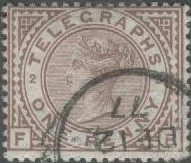
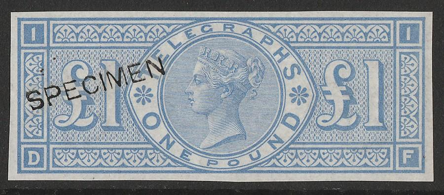
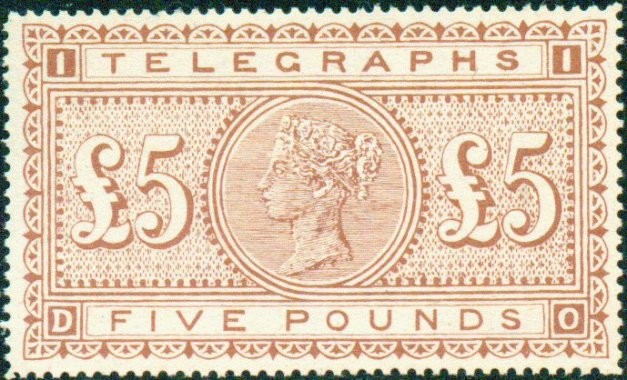
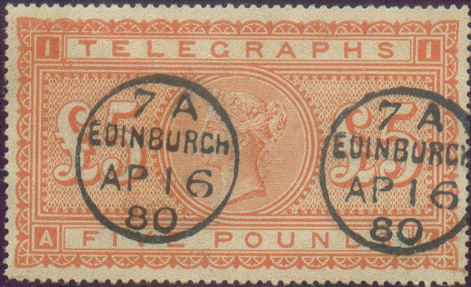
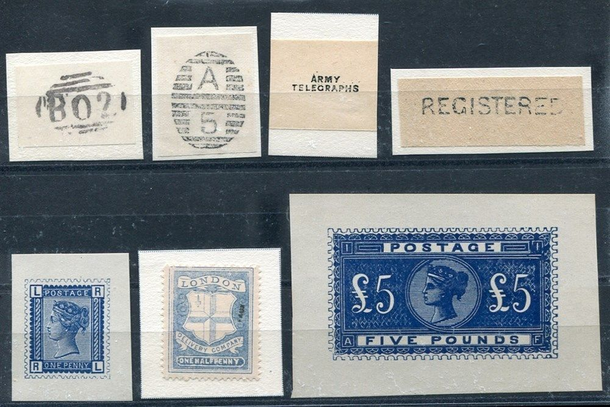
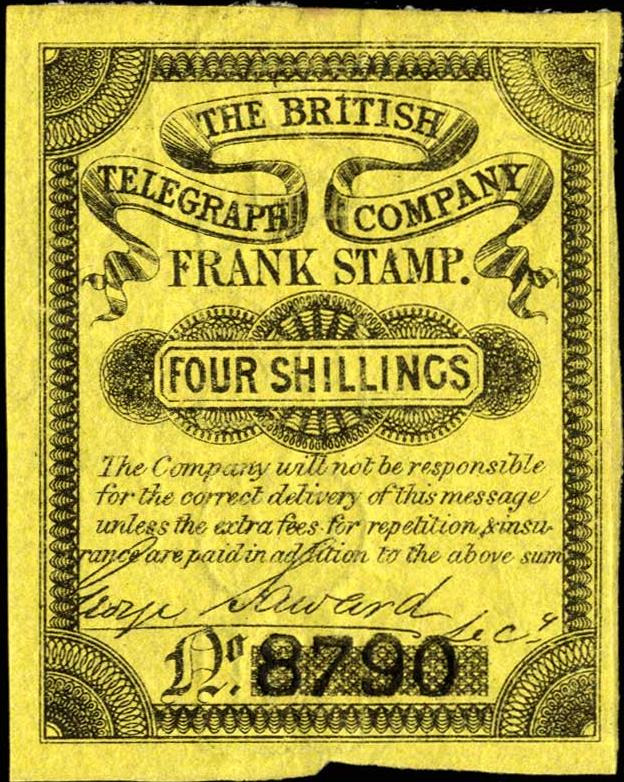
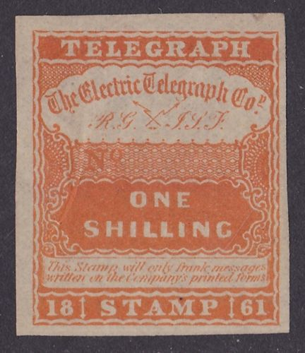
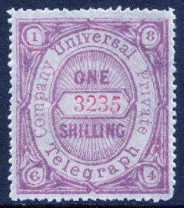
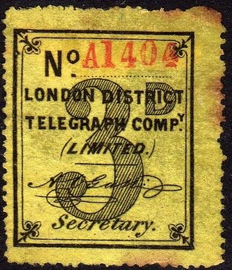
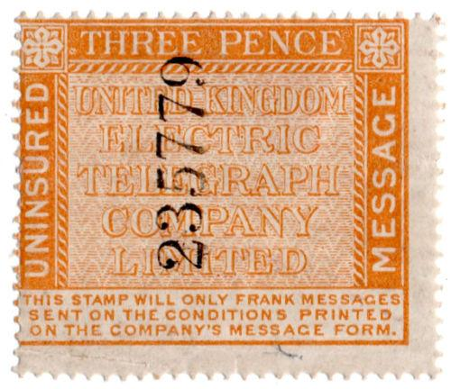

Return To Catalogue - Great Britain
Note: on my website many of the
pictures can not be seen! They are of course present in the
catalogue;
contact me if you want to purchase it.


1/2 p red (plate 5) 1 p brown (plates 1 to 3) 3 p red (plates 1 to 5) 4 p green (plate 1) 6 p grey (plates 1 or 2) 1 Sh green (plates 1 to 10) 1 Sh brown (plates 10 or 12) 3 Sh blue (plate 1) 5 Sh red (plate 1 to 3) 10 Sh grey 1 Pound brown 5 Pounds orange
The 5 Pounds stamp was printed in 14 rows of 4 stamps each with the following corner letters (the same setting was also used for the postage stamp of 5 Pound, but there the sheet was divided into two parts):
| A A | B A | C A | D A |
| A B | B B | C B | D B |
| A C | B C | C C | D C |
| A D | B D | C D | D D |
| A E | B E | C E | D E |
| A F | B F | C F | D F |
| A G | B G | C G | D G |
| A H | B H | C H | D H |
| A I | B I | C I | D I |
| A J | B J | C J | D J |
| A K | B K | C K | D K |
| A L | B L | C L | D L |
| A M | B M | C M | D M |
| A N | B N | C N | D N |

Some imperforate proofs with "SPECIMEN" overprint
Imperforate proof in lilac with "SPECIMEN" overprint.
I've also seen a grey proof.

(Peter Winter forgery)
I've been told that the above forgery was made by Peter Winter in the 1980's. I've seen this forgery with cancel "LUDLOW MY 9 1894". The letters in the bottom corners are "D" and "O", which do not exist in genuine stamps in this combination.
The Barefoot guide of forgeries of Great Britain mentions another forgery that was produced in the 1970's with corner letters "HQ" (impossible for genuine stamps) and with cancel "7A EDINBURGH AP 16 80".

A similar forgery, but with corner letters "AK".
According to the Barefoot guide, the perforation in the corners
is not correct and the perforation holes are too small.
There exist also some fiscal stamps with overprint "MILITARY TELEGRAPHS" (they seem to have been used in Great Britain, Egypt, Bechuanaland and South Africa), examples for Egypt (Sudan?):
(Reduced sizes)
All these stamps are very rare.
Some similar stamps with overprint "ARMY TELEGRAPHS" also exist, they were issued in 1895 (1/2 p orange) and 1900 (1/2 p green, used in South Africa).

Most of these stamps are rare.

The Walter Morley catalogue lists 2 Sh black on yellow and 5 Sh
black on yellow, but not this 18 p black on blue or 2 Sh black on
blue. They have a printed signature on them.
This company issued many telegraph stamps, (the first ones in 1851). See also http://distantwriting.co.uk/TelegraphCompanyStamps.html
With initials "JLR" (J.Lewis Ricardo) and
"JSF" (James Sealy Fourdrinier)
1851-1853 issue?

1861 issue, with initials "R.G. J.S.F." (Robert
Grimston and James Sealy Fourdrinier). Note the orange or white
tablet in the two versions of the 1 Sh stamp.
1864 issue (although the bottom says "18 61"), initials
"R.G. H.W."
"Directors Message", according to the Walter Morley
catalogue, they exists with initials "J.L.R J.S.F",
"R.G. J.S.F" or "R.G. H.W." (as shown above
for Robert Grimston and Henry Weaver).

This telegraph company issued its stamps in 1864 in the values: 3 p (?), 6 p brown, 9 p (?) and 1 Sh lilac. In some (all?) cases they have a control number overprint in various colors (red, black, green, orange).
(English and Irish Magnetic Telegraph)
The English and Irish Magnetic Telegraph stamps were issued in 1853 in the values: 1 Sh black, 1 Sh 6 p lilac, 2 Sh 6 p blue, 4 Sh red and 5 Sh green. There should be a control letter on these stamps. Stamps without control letter (such as the above 2Sh 6 p) are remainders.
The British and Irish Magnetic Telegraph Company also issued stamps in 1857. I've seen: 3 p, 6 p and 1 Sh, 2 Sh, 3 Sh, 5 Sh; all in black (other values might exist).

1862 issue
1865 issue, London District Telegraph Message Stamp 90 Cannon
Street
The London District Telegraph Company issued its stamps in 1862 in the values: 3 p black on yellow, 4 p black on blue and 6 p black on red and 6 p red. These stamps have control numbers overprinted (in red, small black and large black, depending on the value).
I've also seen 'Bonelli's Electric Telegraph Co Limited' with a mercury design (3 p grey, 3 p brown, 3 p green, 6 p black, 9 p blue and 1 Sh orange) issued in 1861.
Issued stamps in 1860. According to the Walter Morley catalogue, the following values were issued: 6 p red, 9 p red, 1 Sh orange, 1 Sh 2 p black, 1 Sh 6 p lilac, 2 Sh 3 p brown, 2 Sh 9 p green.
Issued first stamps in 1862 in upright size: 3 p brown, 6 p red and 1 Sh violet. Sorry, no picture available yet.
Another set was issued in 1863 (oblong size):

United Kingdom Electric Telegraph Company Limited, also with
"INT" (Interest) overprint
The following values exist: 3 p yellow, 6 p red, 1 Sh violet, 1 Sh 6 p green, 2 Sh brown (the values 3 p, 6 p and 1 Sh also exist overprinted with "INT", the values 3 p , 6 p and 1 Sh also exist with a smaller control number, see 3 p above).
Issued stamps in 1861: 4 1/2 p lilac, 3 Sh 9 p lilac, 4 Sh lilac, 7 Sh 6 p lilac, 8 Sh lilac and 4 Sh (in red) on 8 Sh lilac. Proofs in black seem to exist.
This railway was created on 1 August 1859. It joined the Southern Railway on 1 January 1923. I've also listed these stamps under 'Railway stamps'. There were not listed by the Walter Morley catalogue.
Railway Telegraph stamps, inscription "LONDON CHATHAM &
DOVER RAILWAY. STAMP FOR TELEGRAPH Message accepted upon the
Company's conditions VICTORIA STATION"
{kind=link}
{kind=link}
{kind=link}
{kind=link}
{kind=link}
{kind=link}
{kind=link}
{kind=link}